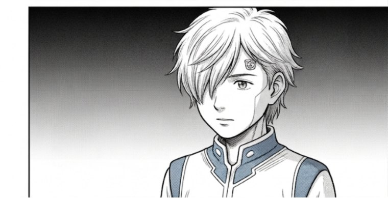

1956 年のダートマスから現代まで——AI の 70 年史を、4 人の研究者の物語として描く学習マンガ。読みながら、G 検定級のエンジニア知識が身につく。
無料で読みはじめる→ 登録不要・ブラウザですぐ読める ／ Arc 1「黎明」全 3 scene 公開中
「AI の歴史は、用語と人名と年号の山で、頭に入らない。」
EPOCH は、それを一本の物語に変えます。技術が生まれた瞬間のドラマを追ううちに、流れごと記憶に残る。暗記ではなく、体感で。
同じ概念を「読む → 学ぶ → 触る」の 3 周で重ね塗りし、記憶に定着させます。 4 周目にあたる「書く」は準備中です。
物語の本編に、技術発見の瞬間を図解で溶かし込む
史的背景・人物・年表・参考文献で深く理解する
パラメータをスライダで動かし、挙動を体感する
Python を実行し、数式を自分の手で動かす。無料公開の予定で、購入内容には含みません
各シーンの漫画を読み終えると、その場の解説とインタラクティブ図解へ自然に流れ、確かめてから次のシーンへ進みます。
Scene を通読。最終ページで「背景を読む →」が現れる
史実・人物・年表。最下部で「図解で確認 →」
操作で体感 → 「次の Scene を開く →」で次へ
「技術書は敷居が高いが、AI の流れは押さえたい」——そんな人のための一冊。物語で掴み、図解とコードで手を動かす。
ご感想を公開でシェアしていただくと、次の Arc のクーポンをお渡しします。 評価の内容は問いません——率直に書いてください。
紹介コードでお友だちが購入されると、紹介した方・された方の双方に割引をご用意します。
第 1 巻「黎明」は今後も無料で公開します。まずはそちらでお試しください。
本作は史実に基づくフィクションです（based on historical events）。実在の人物・団体の描写には創作を含み、
内面や未公開の発言は作者の解釈です。作中で言及した論文・提案書は
参考文献 に明示しています。
本作の画像は生成 AI（Google Gemini）で作成し、ナレーション・構成・編集は作者によるものです。
画像には生成元を示す電子透かし（SynthID）が含まれており、これを除去せず維持しています。
各種表示（プライバシーポリシー・お問い合わせ・特定商取引法）